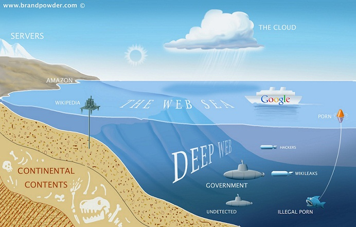

Tor is an acronym for The Onion Router which is a name for an anonymizing service and bundle. Ultimately, Tor is a service that anonymizes all ingoing and outgoing internet traffic, through encryption and bouncing it across hundreds of things called Tor Nodes. Nodes are basically proxy servers dotted across the globe that make it so that there is so much encrypted traffic everywhere, its impossible to break. The only successful way to hack the user data in Tor is to break into the entrance node, which is basically your computer. Tor is generally an organization, extremely popular in the hacking community for the anonymity it provides.
Now, you may be now asking, how the hell do I get this thing?!? Well, Tor has written a Firefox-based browser that not only makes all your internet traffic secret but also allows you access to something called the Deep Web as well as the Surface Web. Uhhh… I have a question. What the hell is the Deep Web and the Surface Web? Well Mr/Mrs User, the Surface web is what you know as the general Internet. That includes sites like Google, Youtube, Facebook, Instagram, etc. However, theres another sort of internet that isn't cataloged by any search engine on the surface web. Here''s a simple image of what its like:
Basically, the Deep Web is another part of the internet where somewhere between 80% and 96% of the internet as a whole exists. Most of it contains illegal activity such as Drug Deals, Underage Pornography and Hitmen/Assassins. The Deep web can only be accessed with the Tor browser. If you want a mild taste of what the Deep Web is like, go to 4chan.org/b/
So, lets bring it back to Tor for a Minute. Why does Tor matter to you? Well, lets say you're a student, and you want to get to Facebook at school. Its blocked, for obvious reasons. Just download Tor onto a USB, and start it up. Boom. You can now get to anywhere. Nowhere is blocked because the way that Internet filters work is to block IP addresses of certain sites that they don't want people getting to. But, seen as Tor is bounced around across hundreds of different servers with different IP's, the school servers cannot block each and every IP, there for not being able to block Tor, and nothing using Tor.
Good Luck.
So you want to surf the web anonymously? TOR's one of, if not the best, way to do it, and best of all it's FREE (and easy to setup and use).
In this tutorial we'll explain in "Layman's Terms", what Tor is.
Tor (used to stand for "The Onion Router", but it's no longer considered an abbreviation, so it's just "Tor"), is an anonymity network, used to surf the web (and more) anonymously. Basically, anyone running the Tor software on their computer runs a proxy, and traffic gets passed (encrypted)from one person running Tor to another person running Tor, multiple times through many users, until it get's to the page that you requested. Hence the term "Onion" used to describe it, since it works in "layers". Each person running Tor on their computer is called a "Node". To the page (and anyone logging requests to that page, such as the website owner for example) they can only see the IP address of the last Node (called the "end node"). Any communication along the way, between you, when you request the website page, and the final destination, is encrypted, and cannot be analyzed. However, the last Node in the chain can log and view traffic through it, if the person running it is unscrupulous, so for that reason it can't be said that Tor is 100% anonymous.
There are a few different ways to use Tor, so we'll explain to you the basic ones. First off, you need to decide which program you'll want to use along side of Tor itself:
So it boils down to do you want speed, or security. Polipo for speed, Privoxy for security. Regardless of your choice, Tor is generally still just too slow to use 100% of your time on the internet, so you'll really only want to use it when wanting to remain private for a short time.
Tor is also much too slow, and for some other reasons, it's highly discouraged to use it for something like Torrent downloading.
Tor works by anonymizing the transport of your data. Like an onion, Tor encrypts the data you send through the web in multiple layers. Your data is then “relayed” through other computers. Each relay sheds one layer then finally arrives at the source in full form. The software bounces users around a network of open connections run by volunteers all over the globe. This prevents people from spying on your Internet connection and discovering sites you visit. Tor scrambles information that could pinpoint your exact physical location.
First and foremost, the utility isn't exclusively for cyber criminals. Tor is for everyone who is concerned about privacy. For starters, many Tor users fear their browsing history is possibly being logged. Many sites, including Facebook, sell your browsing history to advertisers. It's likely those ads on the sides of your social network and email accounts are the product of third-parties buying and analyzing your browsing history without your approval.
It's common for people to turn to Tor for basic security. Often times Activists and Journalists use the utility to report injustices from enemy territory without being discovered or to better protect their sources. The ability to remain undetected by invasive marketing strategies is valuable to just about anyone especially those in a professional environment who routinely share confidential documents and need to prevent third-parties from snooping on their browsing history. Especially considering internet providers have been known to sell your browsing records and even log-in credentials to anyone willing to pay for it.
At times, anonymity is important for safely utilizing basic internet functions. The utility can be an asset for citizens of countries with stringent censorship laws. In some cases, basic information is placed behind a firewall. Tor allows users can anonymously circumvent firewalls and research, say, HIV treatment or access Facebook.
The easiest way to use Tor is the Tor browser bundle. The preconfigured Mozilla Firefox browser is easily downloaded from Tor’s official site. Once downloaded, a message will appear that asks if you’d like to connect or configure your browser. In most cases, you can simply connect. However, you should configure your browser if it’s possible that your connection is censored, filtered, or proxied. It’s also worth noting that Tor may violate internet browsing policies at work or over other public networks.
If you’re on a network that has firewalls and prohibits access to Tor (this could be the case in countries like Iran and China) you can also download Tor via Gmail. Send an message to “gettor@gettor.torproject.org.” In the body of the email write the word, “help.” From there, you’ll receive step-by-step instructions to download Tor.